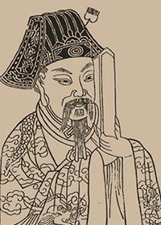

沈约(441-513)
字休文，浙江德清武康人，齐梁文坛领 袖。和谢眺等开创了“永明体”，讲求声韵 格律，促成了诗歌由古体向近体的发展。 撰《宋书》等，明人辑有《沈隐侯集》。
沈约曾在南朝的宋、齐、梁三朝中为官， 梁武帝时官至尚书令、太子少傅。其先父的 墓地则在乌镇河西十景塘西边，旁有普静 寺。每年清明，沈约总要从建康回到故乡扫墓，并守墓数月。梁武帝担心儿子萧统因此荒废学业，但又不能阻止沈约的孝行，于是，只好让萧统随沈约到乌镇跟读。太子来读书，自然得有座像样的房子。于是，不数月，一座书馆在乌镇青墩翼然而立。太子和沈约就在这个书馆里生活、学习，直到回建康。第二年来又周而复始。这个书馆，后来人们就叫它昭明读书处或昭明书院。这样称呼它，当然因为太子的地位和那一段师生共读的佳话，更是为了纪念好学的精神，敬重向学的心灵。